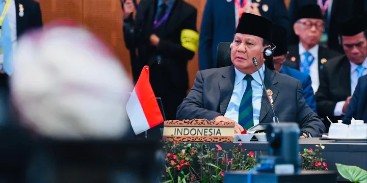

PRABOWO MENGAKUI ISRAEL? JIKA...

Prabowo Dengan Emmanuel Macron
Presiden Prabowo membuat pernyataan kontroversial terkait Israel. Menurut dia, Indonesia siap membuka hubungan diplomatik dengan negara zionis tersebut jika mau mengakui Palestina sebagai negara yang merdeka.
Ketua Pimpinan Pusat Muhammadiyah Anwar Abbas menyatakan tidak sepakat dengan gagasan Prabowo. Dia menegaskan, Indonesia tidak akan membuka hubungan diplomatik dengan Israel karena dinilai sebagai negara penjajah.

Prabowo Subianto Akankah Mengakui Israel?
"Indonesia adalah negara yang sangat anti terhadap penjajahan karena yang namanya penjajahan itu jelas tidak sesuai dengan nilai perikemanusiaan dan perikeadilan," kata Abbas dalam keterangan tertulis diterima, Jumat (30/5).
Abbas menegaskan, UUD 1945 telah mengamanatkan Indonesia harus mendukung kemerdekaan semua bangsa, tetapi tidak mentolerir segala bentuk penjajahan di dunia.
"Sikap tegas tersebut telah dinyatakan dengan jelas dalam alinea pertama pembukaan UUD 1945 yang menyatakan: Bahwa sesungguhnya Kemerdekaan itu ialah hak segala bangsa dan oleh sebab itu, maka penjajahan di atas dunia harus dihapuskan, karena tidak sesuai dengan perikemanusiaan dan perikeadilan," tegas Abbas.
Selain itu, menurut Abbas, bila Prabowo ingin menjalin hubungan diplomatik antara Indonesia dan Israel, maka negara berlambang bintang david itu harus bertanggungjawab terhadap tindakan genosida terhadap rakyat dan negeri Palestina.
"Jika Israel ingin membuka hubungan diplomatik dengan Indonesia maka peluang itu baru bisa terbuka jika Israel berhenti menjajah tanah Palestina dan memberikan kemerdekaan penuh kepada rakyatnya sehingga Paletina bisa menjadi sebuah negara yang benar-benar merdeka dan berdaulat," dia menandasi.
Pernyataan Prabowo
Sebagai informasi, pernyataan kontroversial Prabowo itu disampaikan saat jumpa pers di Istana Kepresidenan ketika bertemu Presiden Prancis Emmanuel Macron.
"Indonesia sudah menyampaikan, begitu negara Palestina diakui oleh Israel, Indonesia siap untuk mengakui Israel, dan kita siap untuk membuka hubungan diplomatik dengan Israel," kata Prabowo usai melakukan pertemuan bilateral dengan Presiden Prancis Emmanuel Macron di Istana Merdeka Jakarta, Rabu (28/5/2025).
Dalam pertemuan itu, Prabowo mengatakan Indonesia memandang two state solution dapat mengakhiri konflik Israel-Palestina. Prabowo menekankan kemerdekaan bangsa Palestina merupakan satu-satunya jalan untuk mencapai perdamaian.